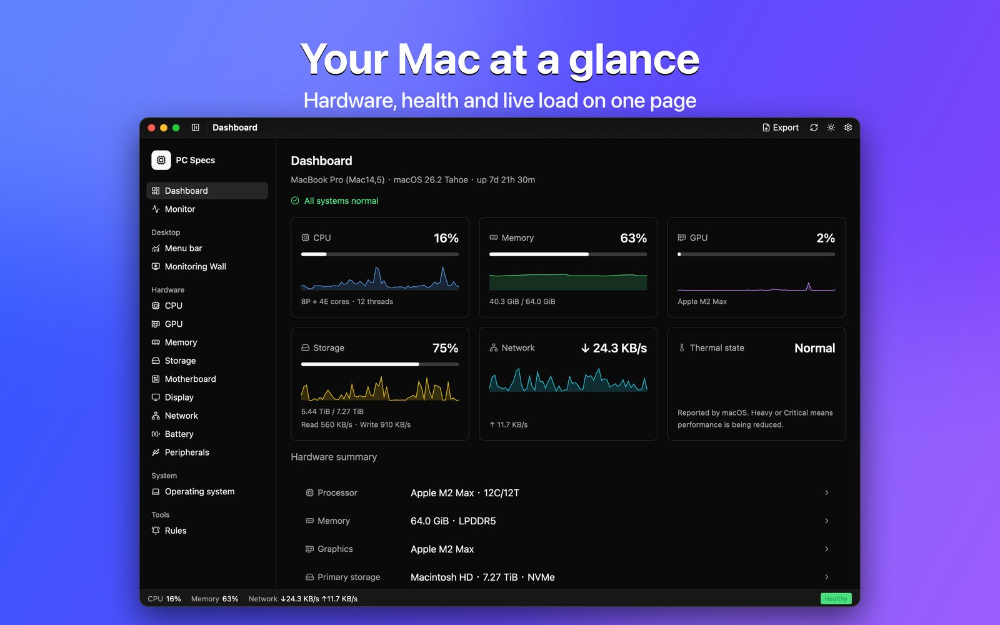
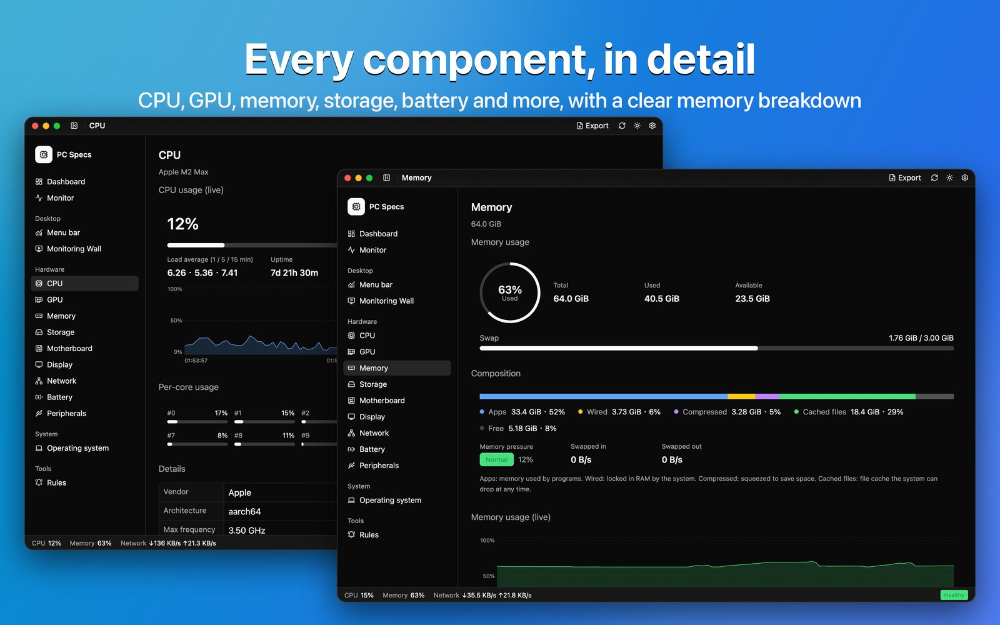
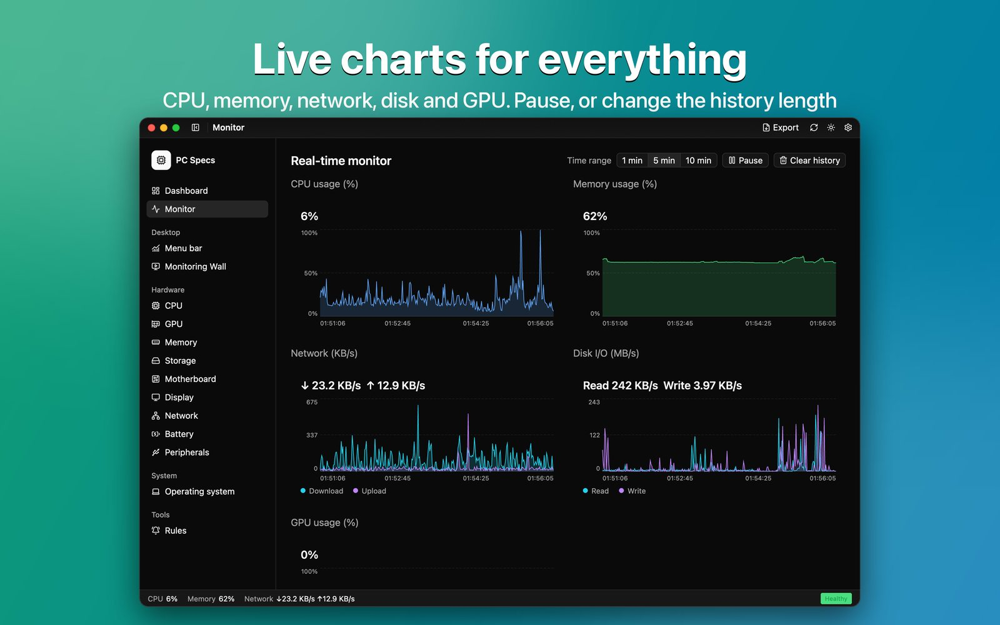
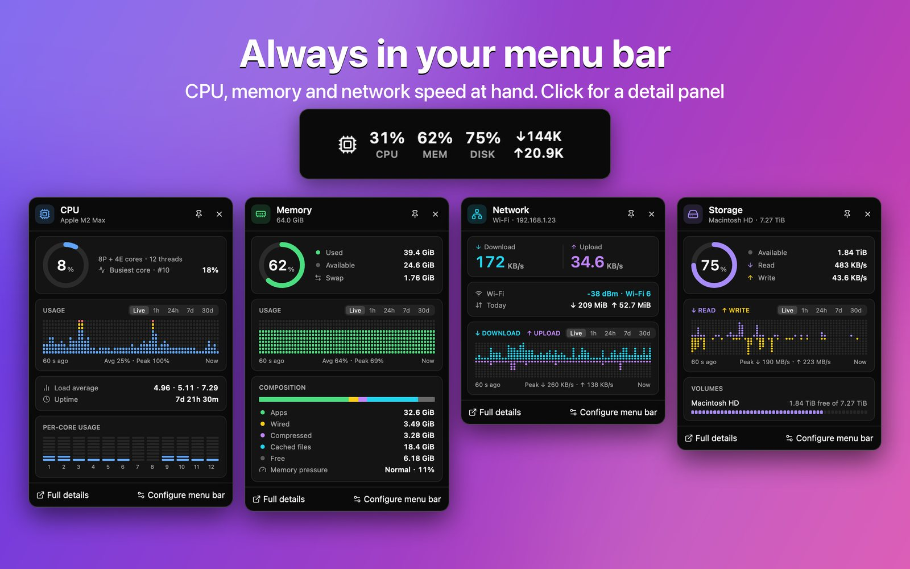
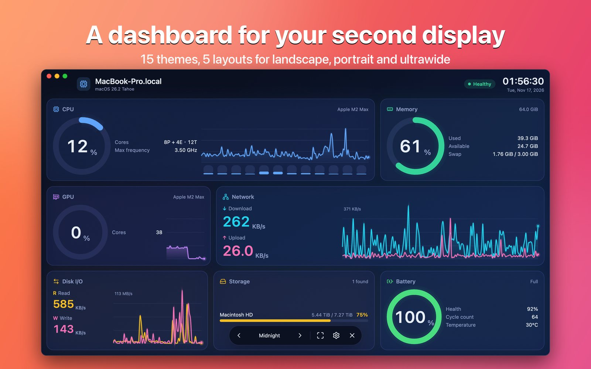
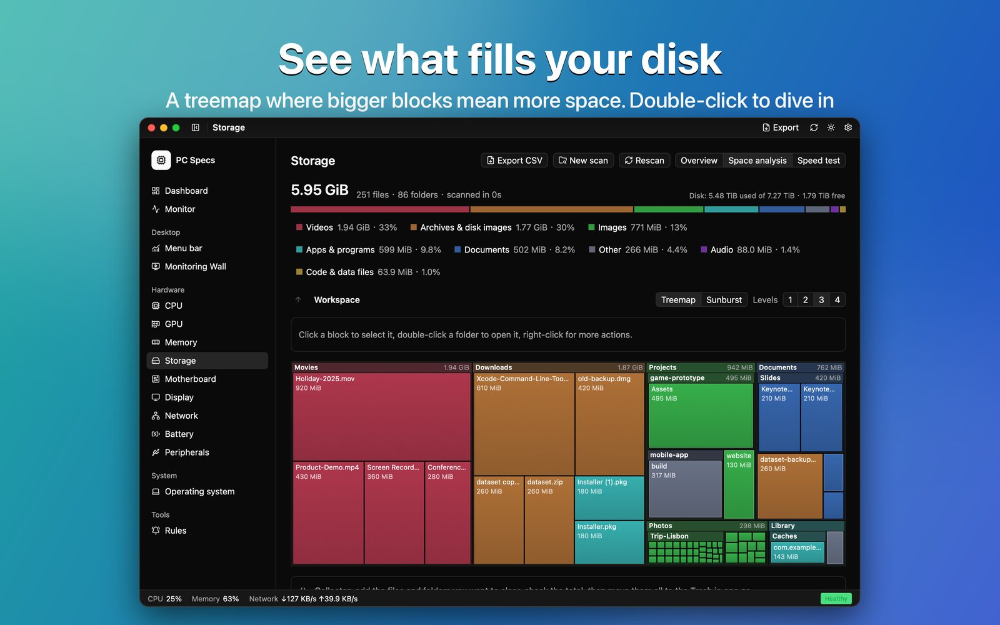
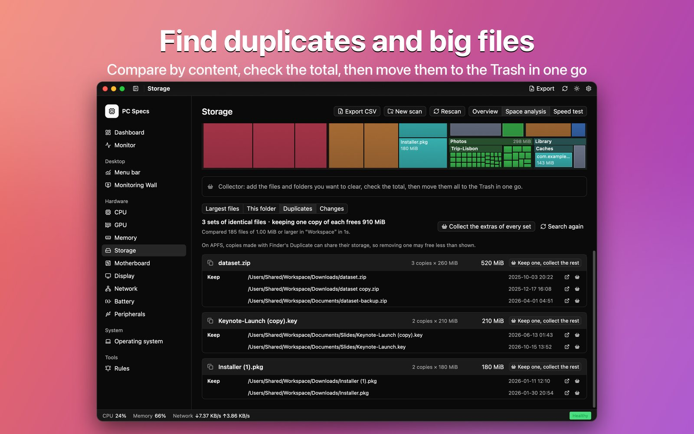
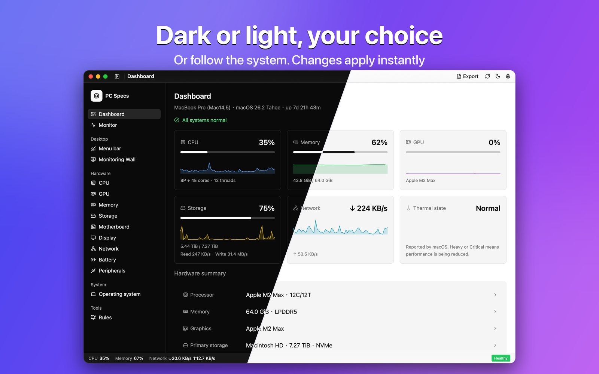

PC Specs
See your hardware, watch it live, find what fills your disk
Download the full editionPick the installer for your system on the GitHub Releases page. The same code also builds a Mac App Store edition with fewer features; see “Two editions” below.

Features
Dashboard
CPU, memory, GPU, storage, network and thermal state on one page, with a one-line verdict on whether anything is wrong. Every card has a live chart and opens its detail page.
Hardware details
Processor, GPU, memory, storage, motherboard, display, network, battery, peripherals and operating system, page by page. Memory breakdown, Wi-Fi signal and battery health at a glance. Anything the system does not report is shown as such, never invented.
Live monitor
Real-time charts for CPU, memory, network, disk I/O and GPU, with every CPU core shown separately. Pause, clear, or switch the history between 1, 5 and 10 minutes.
Menu bar monitor
Put CPU, memory, storage and network speed in the macOS menu bar, in the style and order you like. Click one for a detail panel with trends from 1 hour to 30 days.
Monitoring wall
Fill another display with live readings: 15 themes and 5 layouts that adapt to landscape, portrait and ultrawide screens, and it keeps the screen awake while open.
Storage analysis
Scan a disk or any folder into a treemap or sunburst where bigger blocks mean more space. Includes a largest-files list, duplicate files (compared by content) and what grew since the last scan.
Collector and speed test
Put what you want to clear in the collector, check the total, then move it all to the Trash or Recycle Bin at once. The disk speed test measures sequential and 4K random read/write and compares with the last run.
Rules and notifications
Pick a reading, a threshold and a duration, and get a system notification with a cooldown so it never spams. CPU, memory and disk rules are built in.
Export and settings
Export Markdown, JSON or a long PNG poster, with MAC addresses, serial numbers and hostname redacted by default. Dark, light or follow the system; settings can be exported and imported on another computer.
Two editions
One code base, with the edition chosen at build time. What you download from GitHub is the full edition. The Mac App Store edition runs inside Apple's sandbox, which rules out private interfaces, listing other processes and network access, so it does less:
| Capability | Full edition (GitHub) | Mac App Store edition |
|---|---|---|
| Platforms | Windows, macOS, Linux | macOS 13 or later |
| Dashboard, live monitor, menu bar monitor, monitoring wall, hardware pages, rules and notifications | Yes | Yes |
| Storage analysis, disk speed test | Whole disks or any folder | Only folders you pick in the open dialog; the speed test covers the system disk only |
| Temperature, fan, voltage and power sensors | Yes | No (only the system's “thermal state”) |
| Process list with per-process usage and network traffic | Yes | No |
| Dev environment check, startup items, app management, system cache cleaning | Yes | No |
| Public IP lookup, network latency check, webhooks | Yes (see the privacy policy) | No, the app never goes online |
| Local HTTP data API | Yes, reachable from this machine only by default | No |
Screenshots







System requirements
Windows · macOS 11 or later (the Mac App Store edition needs macOS 13 or later) · Linux (Ubuntu 22.04+, Debian 12+, Fedora 36+ and comparable distributions, with a Vulkan driver and a Wayland or X11 session). Interface languages: Simplified Chinese and English, switchable in Settings.
Source code and per-system install notes are on GitHub.